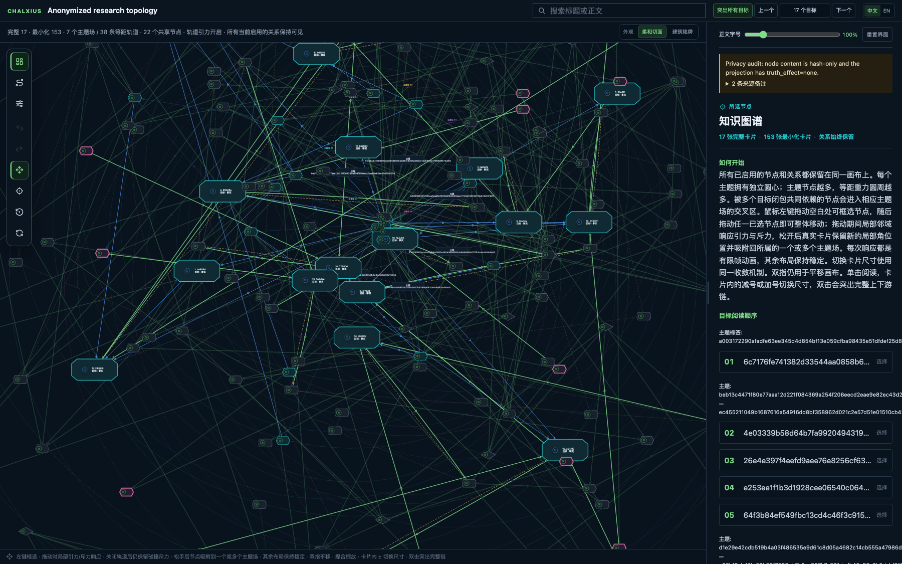

🕸️ Real topology · content removed
175-node anonymized research run
Explore 364 real structural relations across 17 targets and 7 themes. Claims, formulas, names, paths, source identifiers, and node text are absent; every content-bearing node field is an opaque HMAC-SHA-256 value.